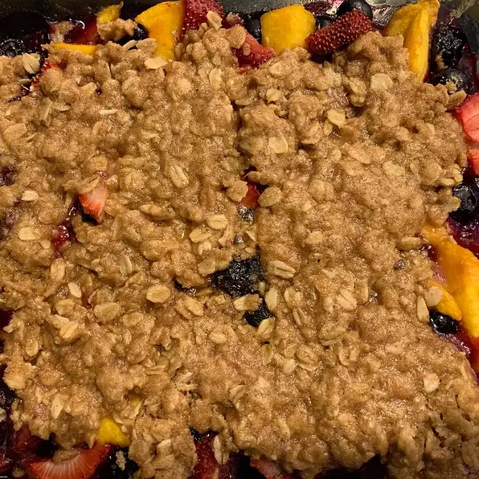

Blueberry & Peach Crisp

Description
Ingredients
Fruit:
- 2 (10 ounce) packages frozen sliced peaches, thawed and drained
- 1 (10 ounce) package frozen blueberries, thawed and drained
- 2 teaspoon leamon juice
- 2 tablespoons all-purpose flour
- 2 tablespoons white sugar
Topping:
- 1/2 cup old-fashioned oats
- 1/3 cup firmly packed brown sugar
- 1/4 cup all-purpose flour
- 1/4 cup chopped almonds
- 1/2 teaspoon ground cinnamon
- 1/8 teaspoon nutmeg
- 1/4 cup butter
Steps
- Preheat oven to 350 degrees F (175 degrees C)
- Gently stir peaches, blueberries, and lemon juice together in an 8 inch square baking dish. Stir 2 tablespoons flour and white sugar into the fruit mixture
- Stor oats, brown sugar, 1/4 cup flour. almonds, cinnamon, and nutmeg together in a small bowl. Mash butter into the oats mixture with a pastry cutter or a fork until the mixture is crumbly; sprinkle over the fruit to cover
- Bake in preheated oven until the fruit is bubbling and the topping is golden brown, about 30 minutes.